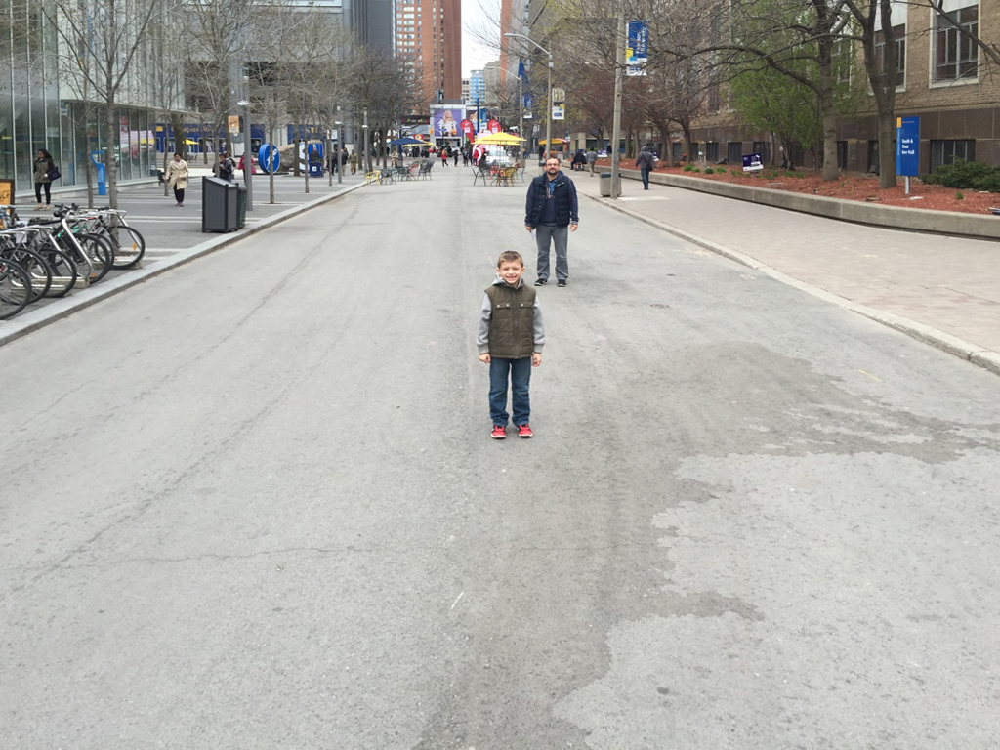

Lab 3: Image Metrology
Thu 2 February 2023 by Aditya AroraOh no! Prof. Derpanis' son George is at summer camp where he has no cell phone reception. During the same time, the Toronto Raptors called Prof. Derpanis and told him they want George to try out for the team once he returns from camp. The registration for the tryouts is due tonight. They need to know three pieces of information about George to complete his registration: (i) weight, (ii) left/right handedness, (iii) and height. Unfortunately, while the first two are known, Prof. Derpanis forgot George's height!
Your goal in today's lab is to help Prof. Derpanis and calculate George's height using \textit{image metrology} so that he can attend the Raptors tryouts when he gets back from camp. Metrology is the science of measurement and its applications. \textit{Image metrology} specifically uses pixels as a form of distance to perform measurements in the real world.
Recall the cross ratio is a constant ratio between four points (A,B,C,D) on a line, and is given by:
| (A,B;C,D) = | AC | : | AD | = | AC . BD |
| CB | DB | BC . AD |

Note that this ratio is invariant to homography transformations and projections. This means that the cross ratio holds for lines in the real world and also on the camera plane. Using this fact, your task is to do the following:
- Take a look at Fig.1, which shows Prof. Derpanis and his son George. Download the Image.
- Following the image metrology lecture in class, set up the solution to solve for the George's height. Note that you must assume you have knowledge of the height of Prof. Derpanis. Assume that Prof. Derpanis is 182.88 cm tall.
-
You will need to select a horizon line. To select one with your mouse, place the following two lines at the beginning of your script:
import matplotlib; matplotlib.use('TkAgg'). Then, useplt.ginput()to bring up a GUI which allows you to select an (x,y) point in the image.
{kind=link}
Once you are done calculating the height of the frontwards object, let the TA know!